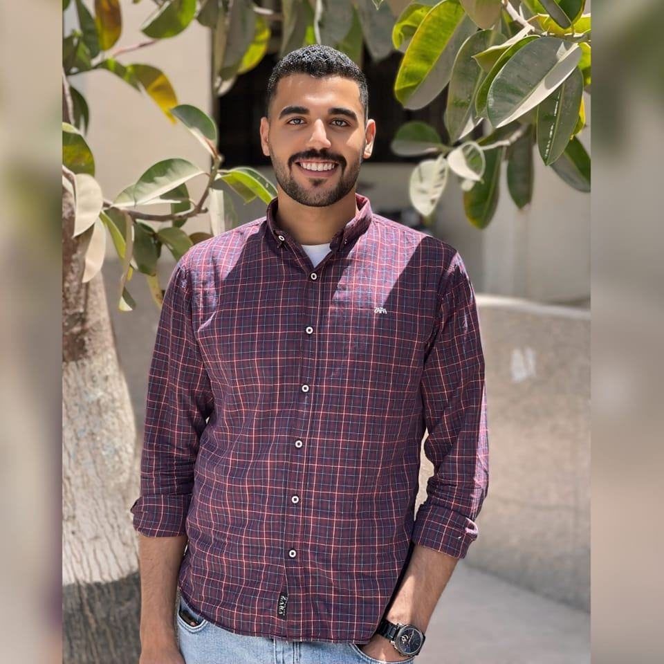

Eng. Hamad S Issa
Chief AI Ethics Officer @ FutureMinds
Eng Hamad has spent over 15 years pioneering research in neural networks and algorithmic bias. She previously led the AI safety team at Global Tech and serves on the International Digital Ethics Board.
Talk: The AI Revolution: Balancing Innovation with Integrity